号外！号外！号外！你的 spring boot integration tests 运行慢吗，是不是每跑一次测试，你都在等待，等待它全绿的那一瞬间。如果你遇到，那请接着往下看，也许可以帮助到你。如果你没有遇到，那也请往下看，因为也许以后你会遇到。
告诉你一个秘密：@MockBean会导致测试类(Test Class)之间spring boot application context不断启动多次！！！
不信，那么我们请看栗子 MockBean Annotation:
这项目有两个测试类，AboutControllerTest 和 TokenControllerTest
AccountControllerTest:
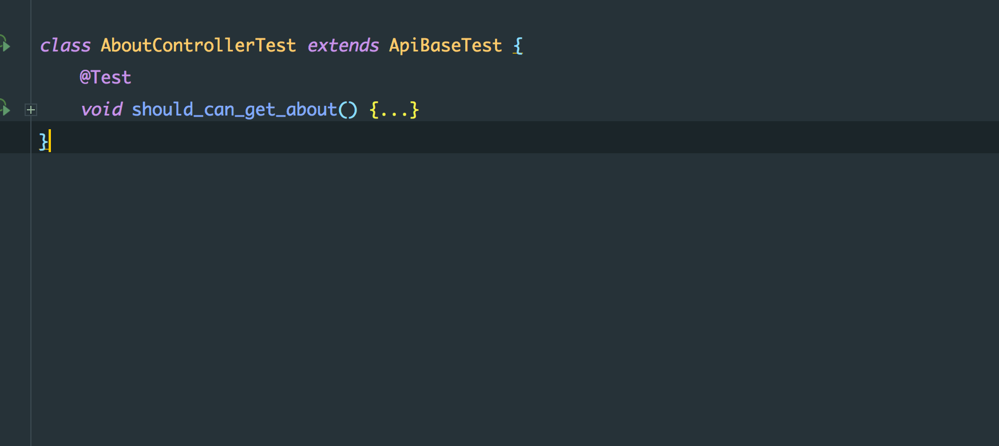
TokenControllerTest:
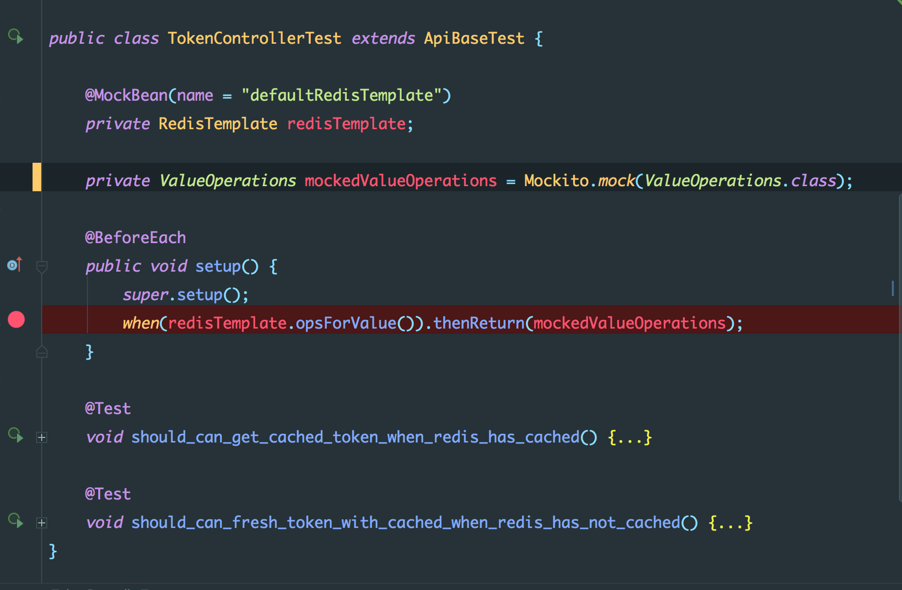
AccountControllerTest 没有使用 @MockBean，TokenControllerTest 使用 @MockBean。下面是两个测试一起运行产生的日志：
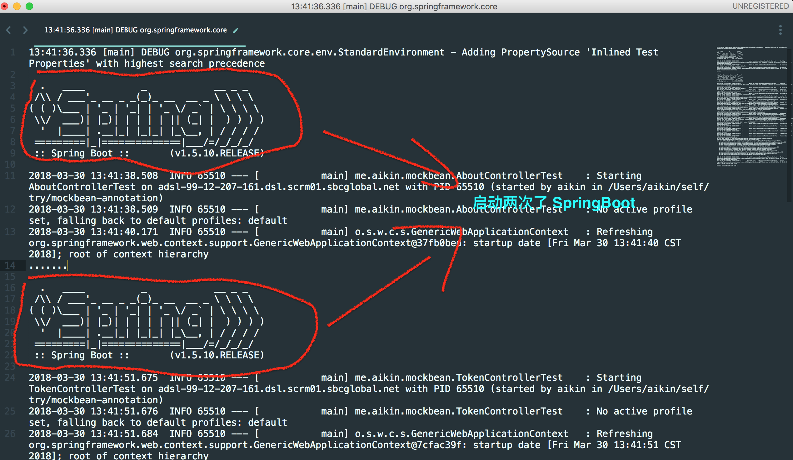
如上图所示，spring boot 启动两次。而spring boot 的启动时间也比较耗时，所以@MockBean，很有可能导致测试运行的很慢。那@MockBean到底是个怎么样的存在？
WHAT
写过spring boot integration test的小伙伴，对于@MockBean应该会比较熟悉。在写测试时，对于一些应用的外部依赖需要进行一些Mock 处理，比如：Redis、ElasticSearch、ExternalService 等。官方文档介绍 Mocking and spying beans：
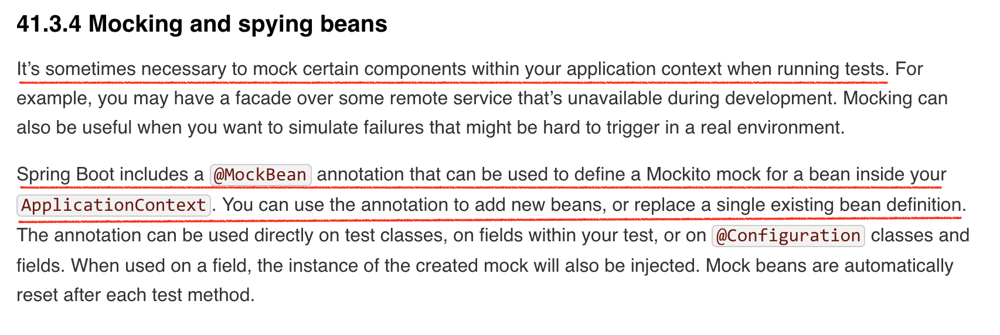
- It allows to add Mockito mocks in a Spring ApplicationContext.
- If a bean, compatible with the declared class exists in the context, it replaces it by the mock.
- If it is not the case, it adds the mock in the context as a bean.
也就是说，@MockBean会改变spring boot application context beans，导致使用了@MockBean的测试类之间的需要不同application context，从而导致spring boot application context重启。为什么需要不同application context 就需要重启？？？带着疑惑，我们接着往下看。
WHY
Spring Boot Application Context
什么是application context？简单理解，就是应用程序运行所需要的上下文。官方文档介绍 Context Management:
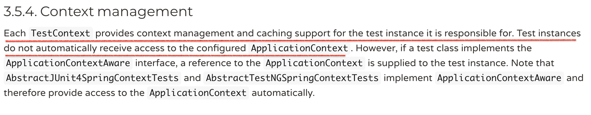
官方文档介绍 Context management and caching：
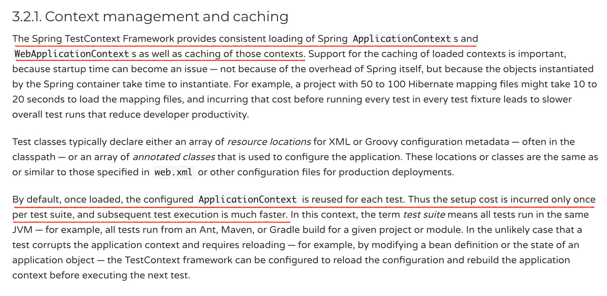
根据官方文档意思，application context为初始化测试实例提供上下文，如果需要不同的application context实例化不同的测试，就需要重新启动spring boot，创建不同applicaiton context。文档还说到，为了解决spring boot application context启动慢的问题，会做缓存处理。那@MockBean到底破坏了什么样的缓存规则，从而导致spring boot重启多次？是什么导致打开方式出了问题？
Spring Boot Application Context Cache
要回答这个问题，就要先了解[application context caching]的uniquely key包含的内容，附上官方文档介绍 Context caching：
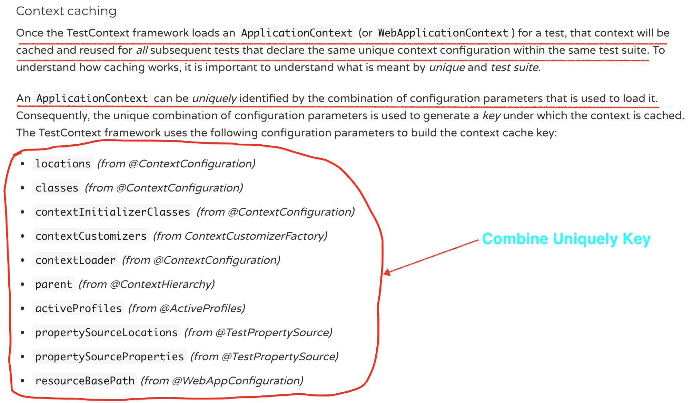
根据文档的描述，不难知道application context cacheing是通过key:value方式进行缓存的，唯一键为组合键，包含：locations、classes、contextInitializerClasses、contextCustomizers、contextLoader、parent、activeProfiles、propertySourceLocations、propertySourceProperties、resourceBasePath。
而@MockBean的使用会导致每个application context中contextCustomizer的不同，从而导致存储在context cache中的application context的uniquely key不同，最终导致application context在测试类之间不能共享。虽然没有官方文档说明这一点，不过在
org.springframework.boot.test.mock.mockito.MockitoContextCustomizerFactory 源代码中可以找到一些痕迹：
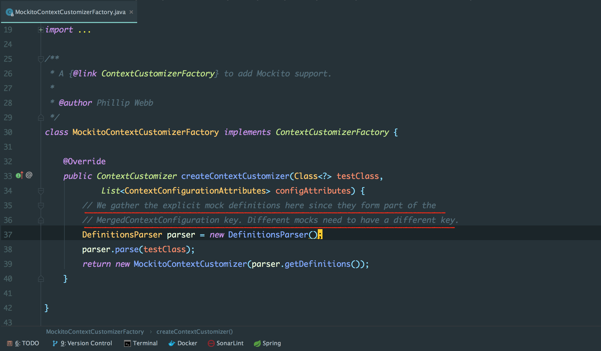
图中所说的MergedContextConfiguration就是application context caching的uniquely key。
HOW
对于spring boot integration test 来说，除了 external service(clients...) 需要被 Mock，其它的内部依赖(service、repository…)都不应该被Mock。external service 可以在配置层，进行Mock，然后在测试类中，直接通过@Auotwrite方式注入：
RedisTemplateBeanConfigurationMocker：
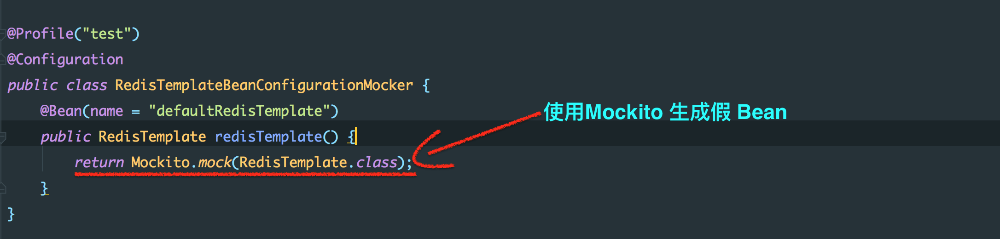
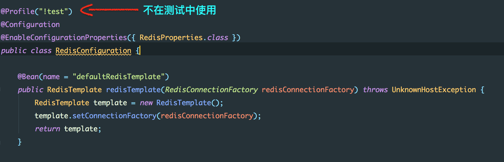
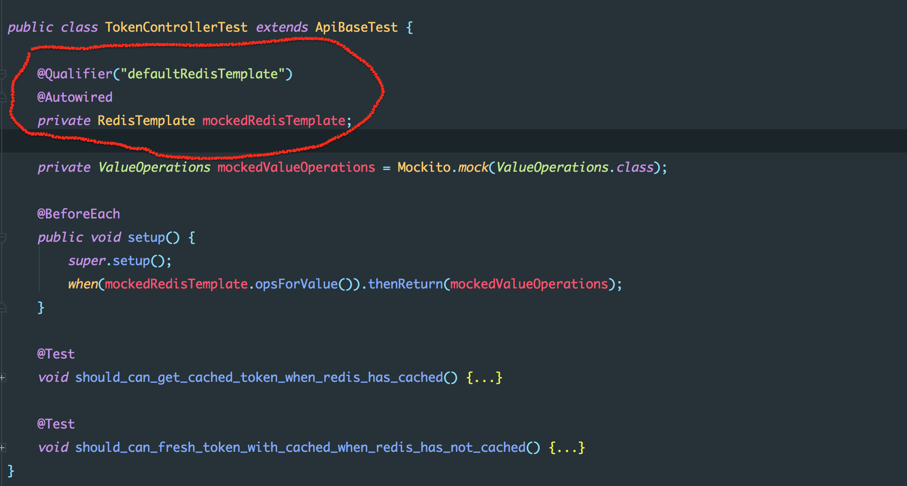
TokenControllerTest，直接 @Autowrite RedisTemplateBeanConfigurationMocker 中配置的，RedisTemplate @Bean。完成栗子，请查mockbean-annotation。
写在最后
spring boot integration test 相对于 api test，应该更关注api功能的完整性，了解依赖的边界，不需要Mock的，就不要Mock，比如：service, repository…。对于外部依赖，统一在配置层完成 Mock，比如：client、redis、rabbitmq...。